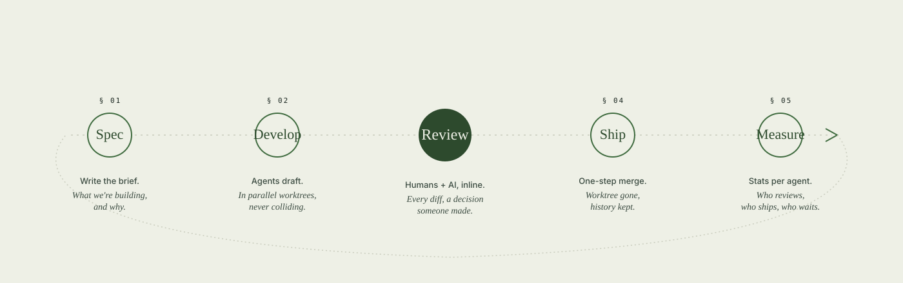
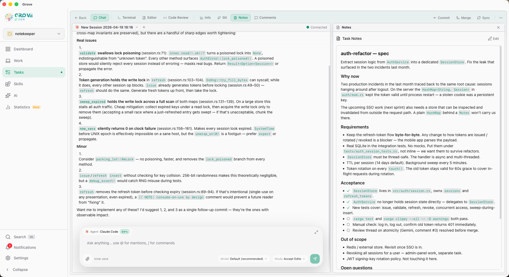
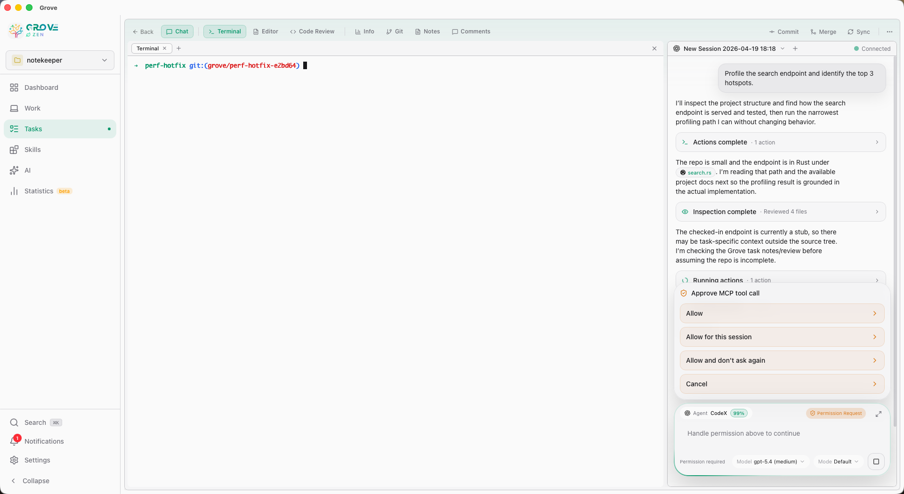
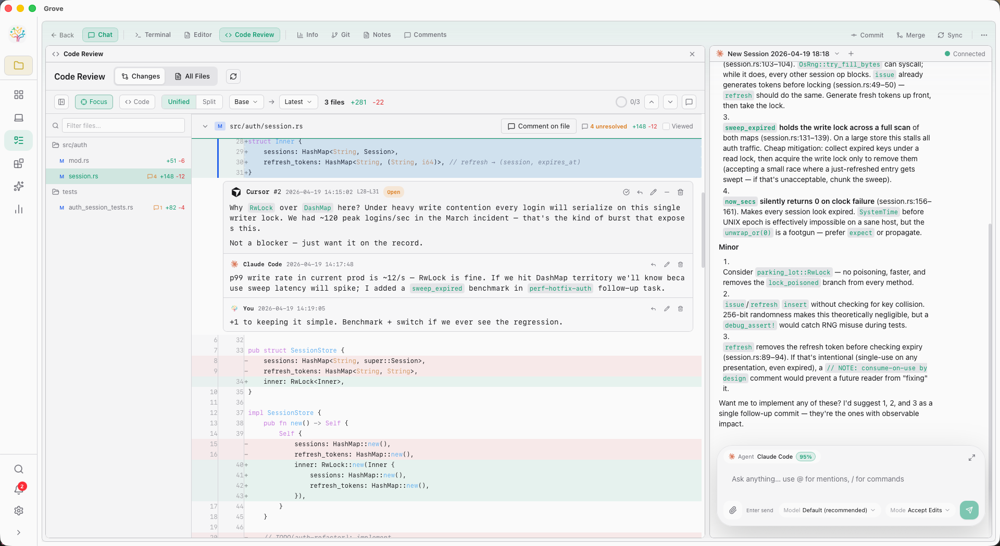

Spec to ship,
with rigor.
Every task moves through four steps — spec, develop, review, ship — plus a fifth that most tools forget: measure. Grove makes each step first-class, and connects them so you never lose context between writing intent and reading diffs.

Write it down,
then let AI loose.
Every Grove task opens with a Notes editor. What you type there
gets injected into the agent's CLAUDE.md / AGENTS.md
at worktree creation, plus GROVE_* environment
variables in the tmux session. Clear intent in → focused output out.
- Task Notes markdown editor, auto-saved on navigation
GROVE_PROJECT,GROVE_TASK_ID,GROVE_BRANCH+ friends exported into the tmux/Zellij session- MCP tools
grove_read_notes/grove_edit_notelet agents read and update their own spec mid-task - Agents discover their context by calling
grove_status— no ambient `GROVE.md` file magic


Chat or CLI.
Your call.
Every agent can run two ways in Grove. Chat mode gives every agent the same friendly UI — cards, plans, inline tool calls. CLI mode drops you into the agent's native terminal experience, the way it was originally designed.
- Chat mode — unified ACP UI, plan + todo panels, streaming
- CLI mode — xterm.js terminal, native agent experience
- Shell mode (
!prefix) — escape to shell without leaving chat - @-mentions, multimedia drops, agent picker per chat
Every merge,
a decision.
Review panels in Grove aren't just a diff. They're a threaded, resolvable, AI-assisted workspace. Comment on any line, discuss, ask the AI to fix what you flagged, and move on.
Inline. Threaded. Fixable.
Click any line to comment. Comments thread. Use @ to pull
in files. Let the AI fixer resolve your comments in a batch. Bulk
resolve with status and author filters when you're wrapping up.
- Line-level comments with threaded replies
- @-mentions inside comments with file autocomplete
- AI fixer — turn a list of comments into a diff
- Bulk resolve with status + author filters
- All Files mode with VSCode-style file icons and cross-file navigation

Ship without
the git gymnastics.
Click complete. Grove commits, rebases, merges, and archives. Cross-branch? Grove checks out the target, merges, and returns. Squash detection is built in — a task that was already squashed won't try to merge again.
Commit → rebase → merge → archive
A single button that runs the whole chain. Any step fails, Grove surfaces the error and rolls back cleanly.
Auto checkout, merge, return
Shipping to a branch that isn't your current checkout? Grove parks your work, switches, merges, returns you home.
Squash detection
If a task was already squash-merged upstream, Grove recognizes it via diff fallback and skips the merge instead of failing.
Every worktree shows up with one-click actions — Go To, Rebase,
Archive, Clean, Recover. Orchestrator agents can call
grove_complete_task themselves, so shipping is a tool, not
a keyboard shortcut.
What actually
shipped.
Grove captures a code snapshot on every archive and builds real statistics on top — what percent of AI-authored lines survived review, which agent needed the fewest fix rounds, where your spec length correlates with intervention count.
Know what AI did.
The Statistics page breaks down AI work, review intelligence, and an agent leaderboard across your chosen time range. Backed by a real API, not a dashboard bolt-on.
- AI Work Breakdown — tool calls / task, plans / task, spec-length vs interventions scatter
- Review Intelligence — AI adoption rate, hit rate, rounds-per-fix
- Agent Leaderboard — canonical-name aggregation across all projects
- Flexible time range picker, per-project aggregation

Ship fast.
Ship on purpose.
AI ships fast by default. The rigor is yours to add — Grove just makes it easy.